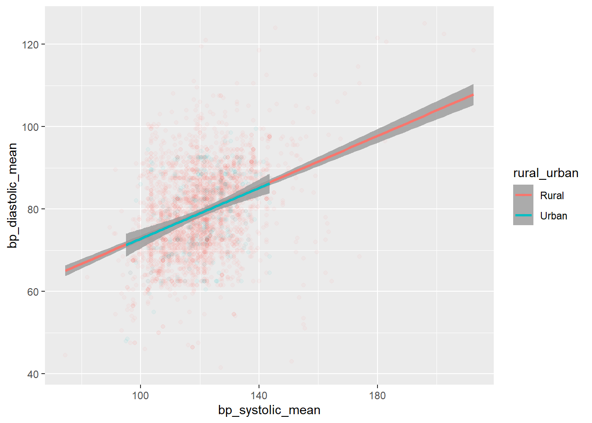

My document
1 Introduction
1.1 Problem Statement
1.2 Research Gaps
1.3 Objectives
What is the prevalence of hypertension among adults in the district?
What is the prevalence of diabetes among adults in the district?
What is the average blood sugar of adult males?
What is the prevalence of anaemia among girls under 18 years?
What is the average BMI of the study population?
2 Methods
2.1 Data Source
Data for the Clinical Anthropometric and Biochemical Survey 2014
2.2 Details about the CAB Survey
- Height/length and weight of all members of the household, women, men and children aged 1 month and above,
- Hb estimation of women, men and children aged 6 months and above,
- Blood pressure of all members of the household aged 18 years and above,
- Fasting blood glucose levels in all members of the household aged 18 years and above.
- Household salt testing for iodine content to assess access to iodised salt.
- In addition information on physiological status of woman, infant and young child feeding practices and morbidity at the time of survey was to be collected to correlate these factors with the nutritional status of the persons surveyed
3 Results
3.1 Prevalance of Hypertension
3.2 Distribution of hypertenison
| The prevalance of Hypertension among Adult Poulation | ||
|---|---|---|
| The data from CAB Survey 2014 (https://data.gov.in/search?title=cab%20survey) | ||
| hypertension | n | prev |
| Absent | 2816 | 83.09 |
| Present | 573 | 16.91 |
- What is the prevalence of anaemia among girls under 18 years?
| Characteristic | Female, N = 8691 | Male, N = 9251 | p-value2 |
|---|---|---|---|
| anaemia_cat | 0.13 | ||
| Absent | 172 (32%) | 165 (28%) | |
| Present | 361 (68%) | 421 (72%) | |
| 1 n (%) | |||
| 2 Pearson’s Chi-squared test | |||
- What is the average BMI of the study population?
# A tibble: 1 × 1
mean_BMI
<dbl>
1 19.3| Characteristic | N = 5,5991 |
|---|---|
| bmi | 19.3, (4.2) |
| Unknown | 643 |
| 1 Mean, (SD) | |